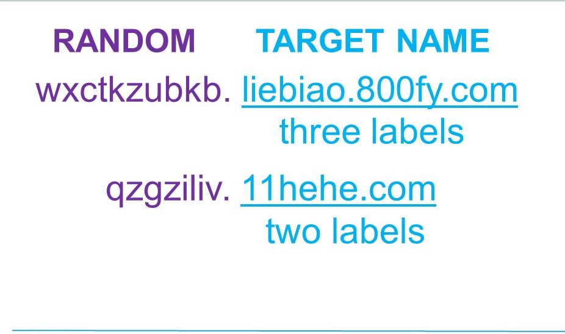
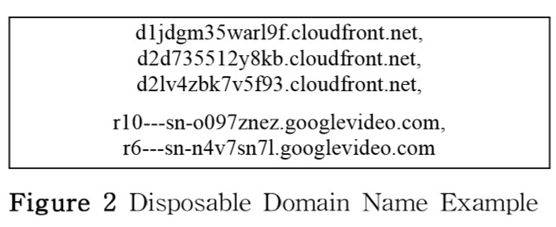

Random Subdomain attack é um tipo de ataque que também tem
a finalidade de inundar a rede dos servidores DNS, enviando
requisições com nomes de subdomínios gerados de forma
pseudo-aleatória, para que as requisições não possam ser
resolvidas e os recursos de rede e de processamento dos
serviços de DNS se esgotem. Esse ataque tem como alvo mais
vulnerável servidores com consulta recursiva disponível.
Na imagem abaixo está um exemplo de ataque de subdomínio
randômico. A intenção é esgotar os recursos dos servidores
autoritativos desses domínios-alvo.

Assim como no Flood attack, o malware Mirai também é capaz de
gerar requisições DNS com subdomínios randômicos através de
dispositivos IoT. A magnitude do ataque à Dyn chegou a
1.2 Tbps de dados. A companhia identificou que entre os
dezenas de milhões de endereços IP, cerca de cem mil eram de
dipositivos infectados pelo Mirai.
Uma das maiores dificuldade em indentificar esse tipo de ataque
está no fato de empresas legítimas também usarem nomes de
domínio pseudo-aleatórios, como na imagem abaixo:

Formas de mitigar o ataque
Tendo em vista que também existem domínios randômicos
legítimos, precisamos diferenciá-los dos maliciosos.
Uma maneira é utilizar uma lista branca que armazena quais
subdomínios são utilizados por quais domínios, permitindo
identificar requisições maliciosas com subdomínos gerados
de forma pseudo-aleatória.